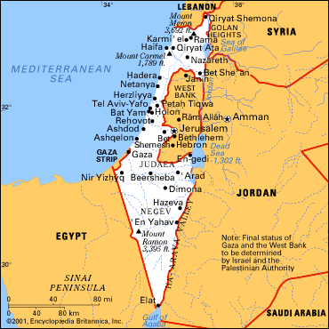

Phần I - DÂN TỘC DO THÁI Chương 1 (A)

a miền

Sự thành lập quốc gia Israel quả lả một phép màu. Một dân tộc mất tổ quốc đã hai ngàn năm, phiêu bạt khắp thế giới, ăn nhờ ở đậu các dân tộc khác, tới đâu cũng bị hất hủi, nghi kỵ, chịu đủ những cảnh thảm nhục, tàn sát không sao tưởng tượng nổi; chính vì chịu những cảnh thảm nhục tàn sát dó mà trong sáu bảy chục thế hệ, bất kỳ ở đâu vẫn giữ được truyền thống tôn giảo, vẫn hướng về quê hương, sau cùng chỉ có một nhúm người, độ nửa triệu, mà anh dũng chống mấy chục triệu dân Ả Rập, chống cả với đế quốc Anh, lập lại được một quốc gia trên mảnh đất của tổ tiên và hai chục năm sau, quốc gia đó chẳng những hai lần củng cố được nền độc lập, mà còn thêm hùng cường, tân tiến, làm cho khắp thế giới phải ngạc nhiên, các nước Á Phi phải noi gương, muốn rút kinh nghiệm của họ trong sự chiến đấu với ngoại bang, nhất là với thiên nhiên.
Quốc gia đó - Israel - nằm trên bờ Địa Trung Hải, phía Bắc giáp Liban và Syrie, phía Đông giáp Jordanie, phía Tây Nam giáp Ai-cập, tóm lại là ba phía giáp các xứ Ả Rập, còn một phía là biển. Tuy phía cực Nam Israel thông với Hồng Hải, nhưng chỉ có một bờ biển độ mười cây số, bị ép giữa hai xứ Ai cập và Jordanie. Nhìn trên bản đồ, ta thấy Israel giống một lưỡi dao mũi nhọn chĩa xuống phía Nam, mẻ một miếng rất lớn ở giữa.
Diện tích được non 21.000 cây số vuông, nghĩa là chỉ lớn hơn diện tích chung ba tỉnh Phong Dinh, Ba Xuyên và An Xuyên của ta một chút. Dân số hồi mới lập quốc (năm 1948) được hơn một triệu người, một nửa là Do Thái, một nửa là Ả Rập, hiện nay con số đã lên tới 2.7000.000 mà chín phần mười là Do Thái từ khắp nơi trên thế giới qui tụ về nói đủ các thứ tiếng, thuộc đủ các nền văn minh.
Tuy đất hẹp như vậy mà có nhiều miền khí hậu khác nhau, y như một lục địa con con vậy. Có đồi núi, cánh đồng, bờ biển và cả sa mạc nữa. Ở bờ biển khí hậu điều hoà, tương đối mát mẻ; ở trên núi phía Bắc, miền thượng Galilée, thời tiết rất lạnh; trong các thung lũng như thung lũng Jourdain, trời rất nóng; nóng nhất là trên sa mạc Neguev ở phía Nam.
Ở phía Bắc, là miền Galilée, đẹp nhất, phì nhiêu, trên là rừng núi, dưới thấp là thung lũng vả đầm lầy. Nhờ công việc tháo nước úng trong mười lăm năm nà mà xóm làng đông đúc. Châu thành lớn nhất là Haifa nằm trên bờ Địa Trung Hải, vừa là một hải cảng, vừa là một thành phố đại kỹ nghệ.
Ở miền Trung, dọc theo bờ biển là hai cánh đồng Chaon và Chefela (1). Trước khi quốc gia Israel thành lập, miền nầy nghèo vì đất bị nước mưa xối hết màu mỡ, hiện nay phát triển rất mạnh, diện tích chỉ bằng 17% diện tích toàn xứ mà dân số trên một triệu, hơn một phần ba dân số toàn xứ. Dải đất đó dải trên trăm cây số, rộng trung bình ba chục cây số trồng đủ các thứ cam, quít, chanh, bưởi. Thứ cam Jaffa (một tỉnh ở bờ biển, sát Tel Aviv) ngon nổi tiếng nhất, xuất cảng rất nhiều: Tới mùa thu, vườn cam trổ bông trắng, hương thơm ngào ngạt khắp đường phố châu thành Tel Aviv. Ở đây tụ tập các người Do Thái ở khắp thế giới; từ Do Thái Nga, Pháp, Đức tới Do Thái Yemen, Mã-lai, Trung-hoa, Chili… đủ các khuôn mặt, đủ các màu da, đủ các ngôn ngữ. Có kẻ đã tính ra được trên bảy chục giống người trà trộn nhau trong cái “nồi nấu kim thuộc” lạ lùng của thế giới đó.
Tel Aviv là châu thành lớn nhất, đông đúc nhất và có những kiến trúc mới mẻ nhất của Israel. Nó là thành “Paris của Tây Á” (2). Khắp thế giới không ở đâu người ta thấy nhiều báo như ở đây: 22 tờ nhật báo, 75 tờ tuần báo, 125 tờ bán nguyệt san, chưa kể hàng trăm tạp chí khác nữa tại một châu thành khoảng 400 ngàn người, cho một dân số 2.700.000 người! Những tờ báo đó xuất bản bằng mười hai thứ tiếng: già nửa bằng tiếng Hebreu (tiếng Do Thái cổ), còn thì bằng tiếng Anh, Pháp Đức, Tây Ban Nha, Ả Rập.
Phía Nam là miền Neguev, một sa mạc hình tam giác mà đỉnh cực nam nằm trên bờ Hồng Hải, đỉnh phía tây nằm trên Địa Trung Hải, đỉnh phía đông, trên bờ biển Từ Hải (Mer Morte). Toàn là những đồi khô cháy nứt nẻ. Ở trên cao nhìn xuống thấy lòi lõm như trên mặt trăng. Diện tích bằng già nửa diện tích toàn cõi Israel mà tới đầu thế chiến vừa rồi hoàn toàn hoang vu.
Từ khi quốc gia Israel thành lập, dân số tăng lên rất mau mà đất đai thì chật hẹp, nên chính phủ phải tìm cách khai phá miền sa mạc đó - một là để đủ nuôi dân - hai là để củng cố quốc phòng, không để một khoảnh đất rộng nào không có người ở mà kẻ thù luôn luôn rình ở chung quanh, có thể len lỏi vào được. Nghiên cứu kỹ đất đai, người ta thấy rằng dưới lớp cát khô cháy, có một lớp hoàng thổ (loess) rất phì nhiêu, y như ở lưu vực sông Hoàng Hà của Trung Hoa; đào sâu hơn nữa, người ta tìm ra được mỏ sắt, mỏ đồng, mỏ phốt phát, mỏ man-gan và cả mỏ dầu lửa, tuy không lấy gì làm phong phú (mỏ dầu lửa chỉ đủ cung cấp một phần hai mươi nhu cầu của Israel) nhưng cũng tạo được công việc làm ăn cho một số người, tiết kiệm được một số ngoại tệ. Thế là những người Do Thái mới hồi hương ùa nhau tới đó để khai phá, y như thế kỷ trước, người Mỹ ùa nhau qua miền Viễn Tây đi tìm vàng.
Người ta lập các đồn điền, đào vô số giếng và những con kinh dẫn nước từ phương Bắc xuống, dựng các nhà máy có những khí cụ tối tân để khai thác những nguồn lợi ở sâu dưới đất, nhất là những khoáng chất rút từ nước biển Tử Hải. Và người ta còn hy vọng sẽ tìm thêm được nhiều mỏ nữa.
Chú thích:
- Có sách viết là Sarin và Séphala
- Chúng tôi dùng tiếng Tây Á để thay tiếng Cận Đông (Proche Orient) của người Pháp, Tây Á đối với Đông Á, cũng như Cận Đông đối với Viễn Đông. Người Âu dùng « cận » và « viễn » là phải ; chúng ta nên dùng Tây Á và Đông Á cho rõ nghĩa hơn.